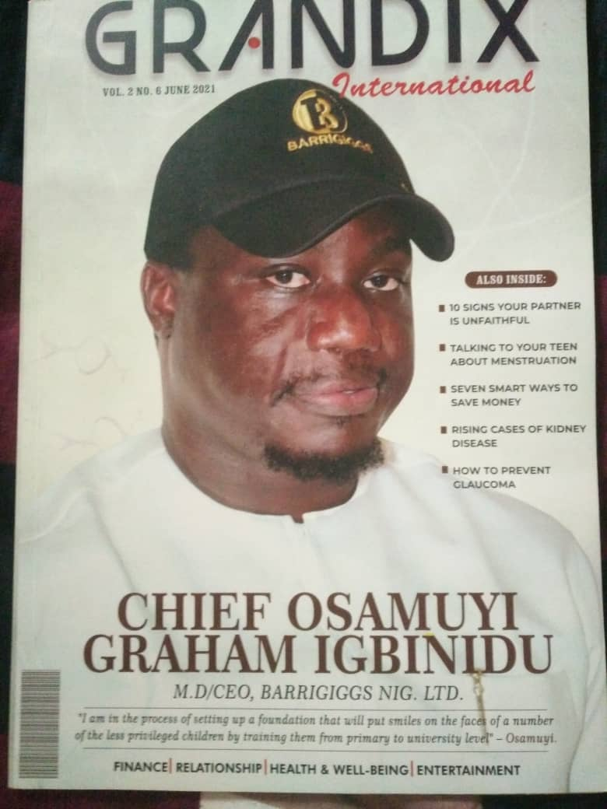
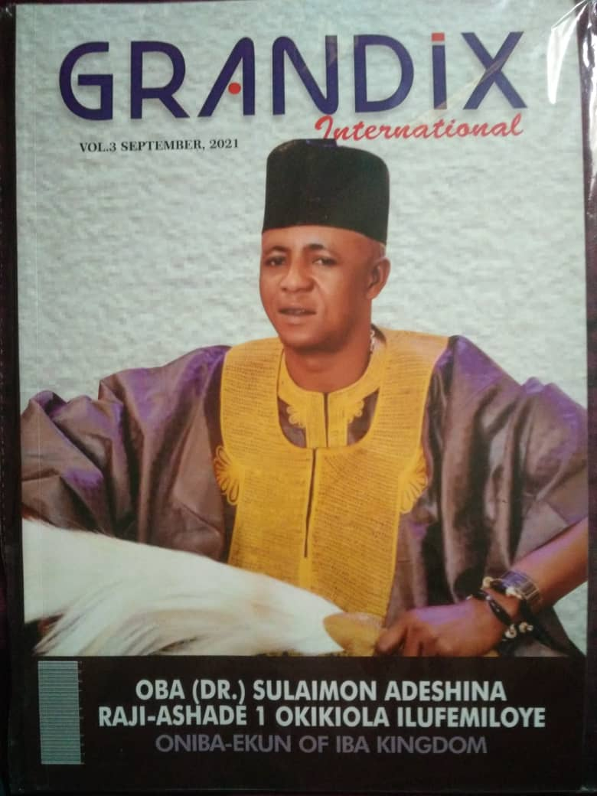
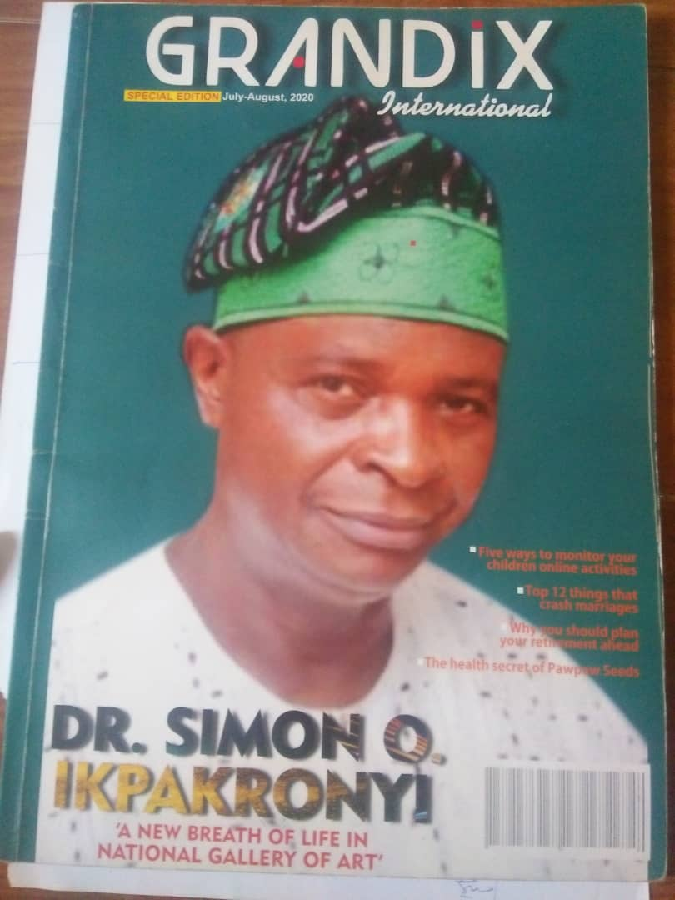

The Grandix Magazine is a rich motivational publication produced by Stonepark Media. It focuses on individuals across Nigeria who have distinguished themselves in their respective fields of endeavour — both in public and private sectors. The magazine highlights men and women making significant contributions to the growth and development of the nation.
Through compelling interviews, opinion features, professional profiles, and in-depth analysis, the Grandix Magazine showcases excellence and inspires readers with the stories of outstanding personalities. Its editorial content covers a wide range of topics including leadership, entrepreneurship, governance, health, lifestyle, finance, entertainment, and more.
With its high-quality print and modern presentation, the Grandix Magazine remains a trusted source of motivation and information for readers across Nigeria and beyond. Each issue aims to educate, inspire, and celebrate excellence in society.


